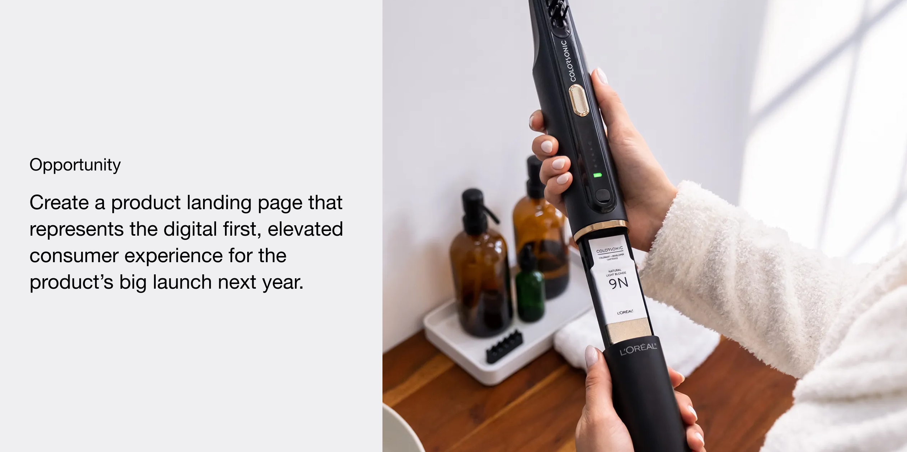
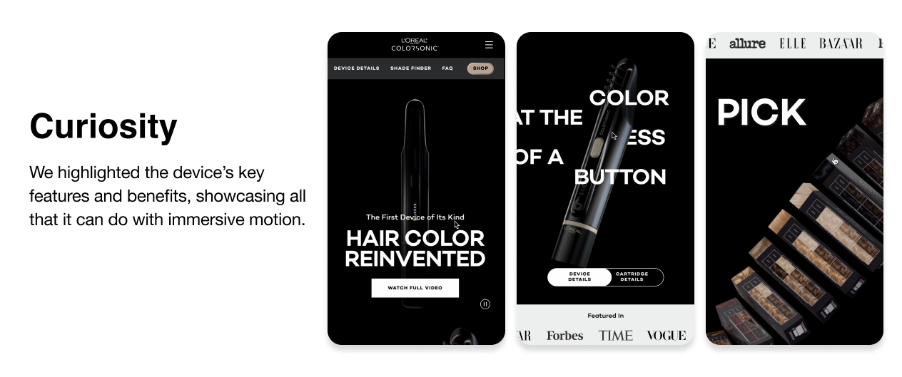
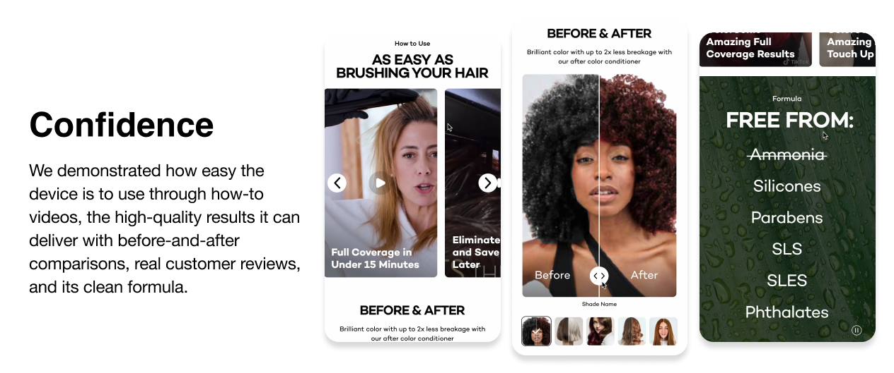
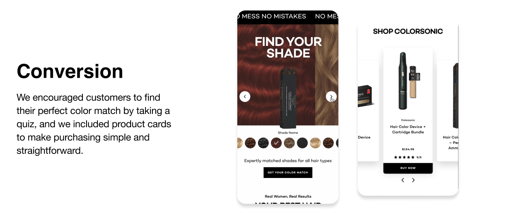

Colorsonic
Winning an Request for Proposal and Securing a Long-Term Client Through an Engaging Landing Page

My roles
Design Direction, UI/UX Design, UX Research, Prototype
Timeline & Team
4 months start to finish collaborated with a cross-functional team
Context
Colorsonic is a first-of-its-kind at-home hair color device, developed over 10 years by L'Oréal Paris.

Process + Solutions
I was part of the pitch team and collaborated with cross-functional leadership to win the project. My main responsibilities included defining the page flow, setting the design direction, and developing the UI and prototype. I also conducted user interviews to gather valuable insights.


